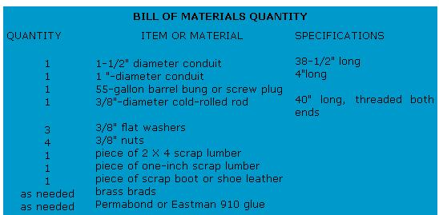
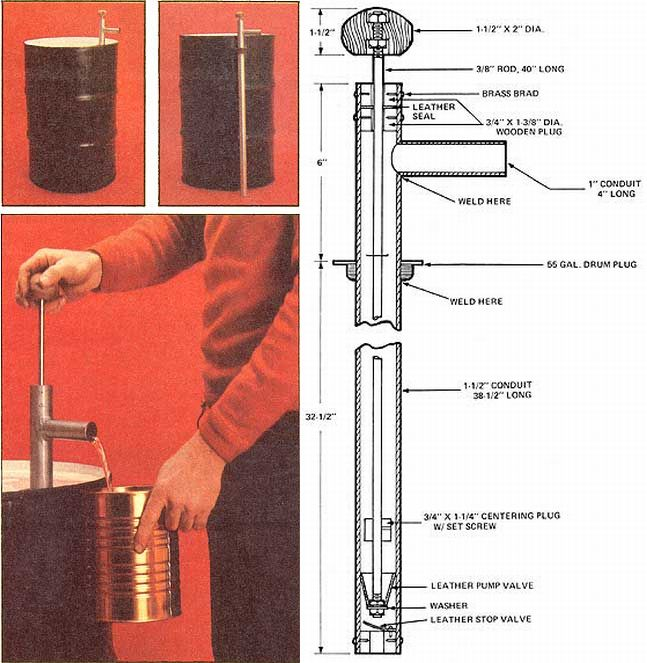

Man! Do we ever love all those old shop magazines that MOTHER has in her reference library! They surely do come in handy.
For instance: When MOTHER researcher Dennis Burkholder recently got tired of wrestling with a 55-gallon drum of solvent every time he wanted to pour out a quart of the fluid, he cleverly retired to MOTHER's reference library. And, once there, a diligent search soon brought him face to face with some old Popular Science plans for the construction of a do-it-yourself bilge pump.
And so, Dennis "did it himself" . . . starting with a 38-1/2" length of 1-1/2" conduit pipe and a piece of 1 " conduit four inches long. First he cut a 1"-diameter hole in the side of the 1-1/2" conduit two inches from one end, and then he welded the 4"-length of 1 " pipe onto the opening so that it was perpendicular to the long piece of tubing. While he was at It, he cut a 1-1/2" hole Into the center of an ordinary 55-gallon drum bung (or screw plug) . . . slipped the plug up over the long section of conduit until it was four inches below the "spout" he'd just welded on . . . and welded the bung in place too.
Burkholder then directed his attention to the other end of the long piece of pipe . . . where he installed a bottom stop valve. This was simply a 1-3/8"-diameter wooden plug cut from a piece of 1"-thick scrap lumber. After drilling a 1/2" hole through the center of the plug, Dennis used a brad or two to fasten a 1-1/4" circle of leather (cut from scrap lying around the shop) to the plug's "top". This created a flap stop valve which-when installed in the bottom end of the conduit as shown-would allow liquid to flow only one way: up.
That homemade valve, by the way, was secured in the end of the tubing by [1] pushing it into position, [2] drilling four holes, each 1/64" smaller than the brads that would go into them, through the wall of the conduit and into the wooden plug, and [3] driving in the four brass brads. This served two purposes: First, the predrilled holes kept the brads from splitting the hardwood plug. And, second, it still left enough gripping power in the four holes to keep the brads from ever loosening and falling out.
The leather pump valve (mounted on the bottom of a 40"-long 318" pump rod) was made by scribing a circle with a radius-not diameter-of 1-3/8" on an old piece of boot leather. The circle was then cut in half and the edges of one of the halves were drawn toward each other until they overlapped about 1/8" all the way up (thus forming the half-circle into a cone). The overlap was glued together with Parma-bond cement and then sewed with a waxed thread so the cone would never come apart.
Next-using tin snips-Dennis cut enough off the tip of the flexible valve he'd just made to create a hole with a diameter of 1/4" in the cone's "nose". A few short slits were then made around the hole's circumference and perpendicular to it so that the 1/4" hole would slip tightly onto the 318" pump rod. Finally, the cone-shaped leather valve was secured to the rod with two nuts and a washer as shown in the accompanying drawing.
Burkholder then made a 1-1/4"-diameter wooden plug from scrap and drilled a 318" hole in its center. He also fluted the sides of the plug (so liquid could pass freely around it), slid the plug down the 3/8" pump rod until it was positioned about one inch above the cone-shaped leather valve, drilled a 1/8" hole through both the wooden plug and the metal rod, and secured the first to the second by inserting a 1/8" brass pin.
The combination rod guide and seal at the top of the pump consists of two 1-3/8"diameter wooden plugs with a 1-3/8"diameter circle of leather sandwiched between them. To allow for expansion of the wood, a 13/32" hole (1/32" larger than the 3/8" rod which slides through it) was drilled through the center of each plug. And, to make sure the leather seal really sealed, no hole was drilled through it at all. Instead, Dennis used a center punch to prick the center of the circle just enough for the leather to slip tightly over the pump rod.
The rod guide/pump seal combination was then Installed by sliding one of the wooden plugs down over the upper end of the pump rod and into the top of the 38-1/2" length of 1-1/2" conduit until the upper surface of the wood was 718" below the tubing's top rim. The plug was secured there with four brass brads just the way the flapper valve plug had been secured in the tube's other end. The leather seal was then slipped down over the rod, the second wooden plug was pushed down until the seal was sandwiched snugly between it and the first, and the top plug was secured in place with four brass brads.
Finally, to give his homecrafted pump a real homecrafted look, Dennis rasped and filed out a large round handle from a piece of 2 X 4 scrap. A 3/8" hole was drilled through the center of the handle and the hole was countersunk on both sides as shown so the two nuts which hold the grip to the pump rod would not protrude above the handle's surface. "If you make your handle from softwood," Dennis says, "you may want to put a flat washer under each of the nuts. That isn't necessary, however, with hardwood." Either way, though, the pump is a winner.
|
 |
 |
|